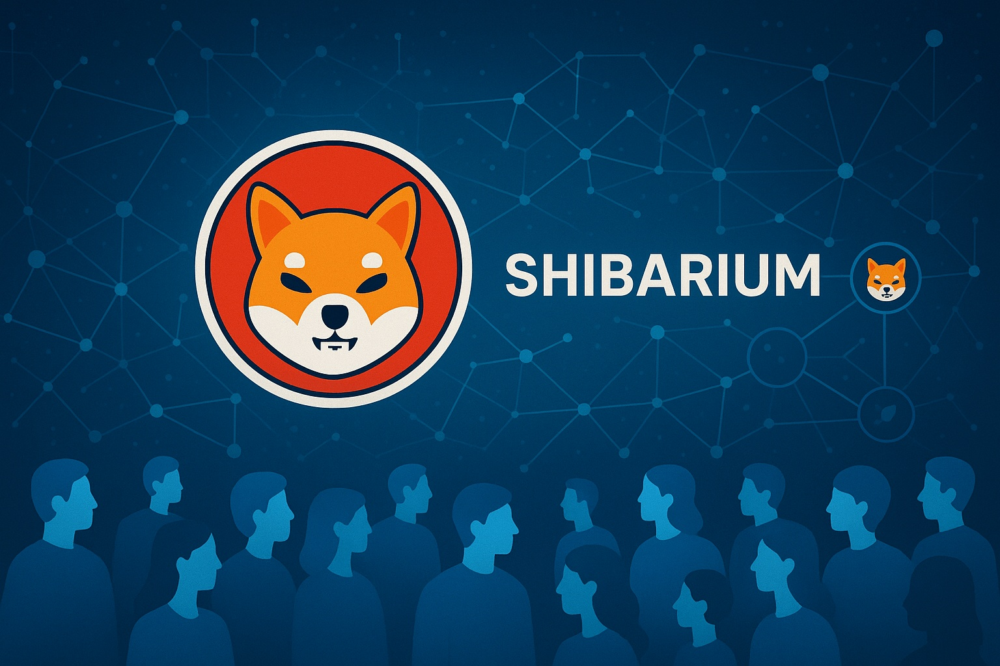

Shiba Inu Price Prediction for End of 2025: In-Depth Analysis and Insights
The information in this article is provided for educational purposes only and is not investment advice. Cryptocurrency investments carry risks.
Introduction
As of August 20, 2025, 01:14 AM EEST, Shiba Inu (SHIB) is trading at approximately $0.00001308, maintaining its position as the second-largest meme coin by market capitalization, around $7.83 billion. Launched in August 2020 by the anonymous developer Ryoshi, SHIB started as a Dogecoin-inspired meme coin but has evolved into a robust ecosystem featuring ShibaSwap, a decentralized exchange, and Shibarium, a layer-2 scaling solution. Backed by the passionate "Shib Army," SHIB has garnered significant attention for its community-driven growth and potential utility. This article provides a detailed analysis of SHIB’s price outlook for the end of 2025, exploring bullish and bearish scenarios, key growth drivers, and risks based on current market trends and ecosystem developments.
Current Situation
As of August 20, 2025, Shiba Inu’s price is approximately $0.00001308, down 37% from its 2025 starting price of $0.00002080, reflecting a bearish cycle. Over the past 30 days, SHIB recorded 14/30 (47%) green days with a volatility of 7.27%, and the Fear & Greed Index shows 64 (Greed), indicating cautious optimism. Despite a significant decline from its all-time high of $0.00008845 in October 2021, recent developments like Shibarium’s 1 billion transactions since August 2023 and a 272% surge in whale activity signal strong community and network support. Technical charts show a bullish engulfing pattern on the weekly timeframe, suggesting potential momentum for a price recovery.
Price Predictions for End of 2025
Analyst forecasts for Shiba Inu by December 2025 vary widely due to its speculative nature. Bearish projections suggest SHIB could drop to $0.000005457–$0.0000139, particularly if market corrections intensify or regulatory pressures mount. Moderate estimates, such as those from CoinGape, predict a range of $0.0000139–$0.0000165, while CoinCodex forecasts a trading range of $0.00001106–$0.000058, averaging $0.000021. Bullish scenarios, driven by Shibarium upgrades and altcoin season hype, project prices as high as $0.00006392 (CoinPedia) or even $0.00007515 (CoinCodex), representing a potential 332.26% increase. CryptoNewZ and CoinLore offer optimistic highs of $0.0000326 and $0.0000885, respectively, contingent on sustained ecosystem growth.
Factors Driving Price Growth
- Shibarium Development: Shibarium’s layer-2 solution, with over 1 billion transactions, enhances scalability and reduces transaction costs, boosting SHIB’s utility.
- Community Support: The "Shib Army," with over 1.5 million holders, drives visibility and adoption through social media and community initiatives.
- Token Burns: Ongoing burn mechanisms reduce SHIB’s quadrillion-token supply, potentially increasing scarcity and supporting price appreciation.
- Market Sentiment: A projected altcoin season in 2025, particularly from February to April, could propel meme coins like SHIB to new highs.
- Ecosystem Expansion: Developments like ShibaSwap, Shiba Eternity (P2E game), and Shiba Realms (metaverse) enhance SHIB’s utility and appeal.
Risks and Downward Factors
- Market Volatility: SHIB’s speculative nature makes it susceptible to sharp corrections, with a potential 30–50% drop in a bearish market.
- Regulatory Uncertainty: Stricter cryptocurrency regulations, especially in major markets like the U.S., could limit SHIB’s accessibility.
- Competition: Rival meme coins like Dogecoin, PEPE, and BONK could divert investor attention and capital.
- Limited Utility: Despite ecosystem growth, SHIB’s reliance on hype over tangible utility poses risks if community momentum wanes.
Volatility Analysis
From July to August 2025, SHIB’s price fluctuated between $0.00001250 and $0.00001590, with a 7.27% volatility rate, reflecting its sensitivity to market trends and social media sentiment. Technical indicators, including a bullish engulfing pattern and an RSI near 55 (neutral), suggest potential for a breakout above $0.000015 if volume exceeds $500 million. Shibarium’s adoption and burn events could drive further upside, particularly in Q2 2025, with analysts predicting a potential double-digit percentage increase in March. However, failure to break resistance at $0.00001590 could see SHIB retreat to the $0.00001080–$0.00001100 support zone.

Conclusion
By the end of 2025, Shiba Inu’s price is projected to range between $0.0000139 and $0.00006392, with optimistic scenarios suggesting a high of $0.0000885 if Shibarium adoption and market sentiment align. However, investors should exercise caution due to SHIB’s high volatility, regulatory risks, competition from other meme coins, and reliance on community-driven hype. Thorough research and risk management are crucial before investing in Shiba Inu.